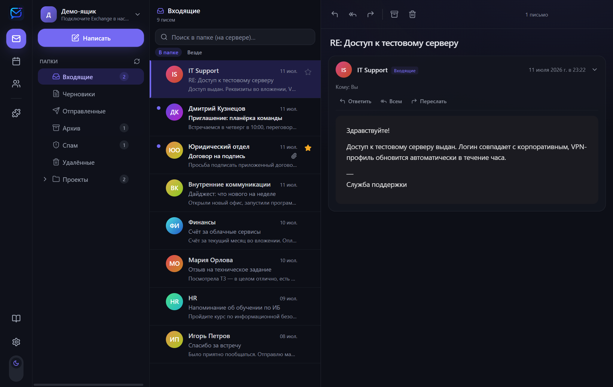

Эволюция почтового клиента.
Почтовый ассистент.
Беседы, календарь, быстрый поиск, вложения, черновики и горячие клавиши — всё в одном настольном приложении.
версия —
обновлено —
Windows 10/11 · macOS 12+
Microsoft Exchange (EWS) и IMAP
